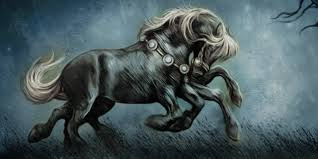

Fenrir

Fenrir es un gigantesco lobo, hijo de Loki y Angrboda. Según las leyendas, está destinado a traer el caos durante el Ragnarök al devorar al dios Odín. Debido a su fuerza y amenaza, los dioses intentaron encadenarlo varias veces, logrando hacerlo con Gleipnir, una cuerda mágica creada por los enanos.
Jörmungandr

Conocida como la Serpiente de Midgard, Jörmungandr es otra descendiente de Loki y Angrboda. Es tan grande que puede rodear el mundo y morderse la cola. Según la profecía, durante el Ragnarök, Jörmungandr enfrentará a Thor en una batalla mortal.
Sleipnir
Sleipnir es el caballo de ocho patas de Odín, considerado el más rápido y poderoso de todos los caballos. Fue engendrado por Loki, quien tomó la forma de una yegua para dar a luz a este magnífico animal. Sleipnir puede viajar entre los mundos y es un símbolo de poder divino.
Dragones Nórdicos

En la mitología nórdica, los dragones son símbolos de poder y destrucción. El más conocido es Nidhogg, un dragón que habita en las raíces del árbol Yggdrasil y se alimenta de los cuerpos de los muertos. Los dragones son guardianes de tesoros, pero también presagios de destrucción.